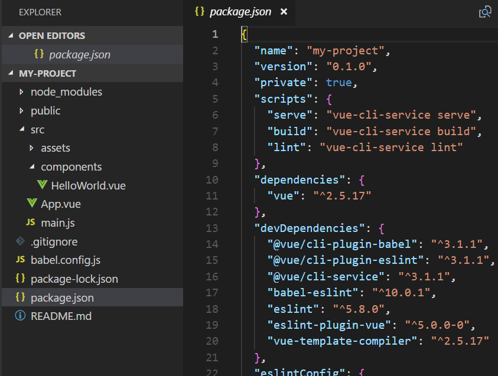

To Do Today:
-
webRTC
Peer to peer communication
-
ES modules
History of module systems in JS to now, npm, webpack
-
Vue ecosystem
vue ui (CLI), Storybook, Vuetify, Vuex, Router, Testing, Vue Native, nuxt, Vuepress
webRTC
- GOOD: webRTC is a free, open source API that enables modern browser-to-browser/P2P communication
- GOOD: It's capable of text chat, and real-time voice (microphone), video (webcam) communication
- BAD: you have connectivity problems (corporate firewalls), uses any port > 1024 so hard to config firewall.
- List of WebRTC products
Server(s) handshakes the 2 computer's IP addresses, port# and a protocol (UDP or TCP)
-
Create a new webpage and include the following
<script src="https://cdnjs.cloudflare.com/ajax/libs/simple-peer/9.1.2/simplepeer.min.js"></script> -
Do this example except change the following:
Don't need var Peer = require() anymore since we used the script tag above
Change var p = new Peer(..) to var p = new SimplePeer(..)
- Open up the first tab but add #1 at end: http://localhost:8080/index.html#1
- Open up second tab but don't add #1: http://localhost:8080/index.html
- In first tab, after a few seconds, you should see a long line of text. Copy/paste that into second tab's box and click button.
- In the second tab, you'll then see a new long line of text. Copy/paste that line into first tab's box and click button.
- Goto console log for both tabs.
- In first tab's console, type: p.send('hello there')
- Check second tab's console. You should see message! Try responding back with your own p.send()
webRTC example
Text only: https://week11c-yaeijsysmk.now.sh/webrtc.html#1
Video + audio: https://week11b-nanmhjkwwx.now.sh/webvid#1
JS Tooling: from then to now
-
In the beginning...
Building a website via plain HTML and JS
-
Pain point: annoying to find/download new versions of libraries
Solution: package managers
-
Pain point: digging through node_modules/ to find path of each package
Solution: auto-build a single script file via module bundlers
-
Pain point: running webpack each time we change js
Solution: automate different parts of the build process via task runners
-
Pain point: ES6+ can't be read in older browsers
Solution: transpilers
<!DOCTYPE html>
<html lang="en">
<head>
<meta charset="UTF-8">
<title>JavaScript Example</title>
<script src="index.js"></script>
</head>
<body>
<h1>Hello from HTML!</h1>
</body>
</html>
In the beginning...
- Where does the browser assume index.js is located?
- Try making the h1.textContent come from index.js - error?
- Does placement of the script matter? (parsing discussion)

moment().format('MMMM Do YYYY, h:mm:ss a');
Including other JS scripts
- Let's say we wanted to include moment.js library.
- How would you download it in order to use it?
- Goto https://momentjs.com/
- Download it
- Pain point: annoying to find/download new versions of libraries


Using a JavaScript package manager (npm)
- In 2010 - several competing JS package managers emerged
- In 2013 - Bower was the most popular
- In 2015 - Bower was overtaken by npm
- In 2016 - yarn competes with npm but it uses npm packages
Note: npm invented as the package manager for node.js, a JS server runtime, not frontend. Using package managers generally involves using a command line, which in the past was never required as a frontend dev.
// create package.json file to keep track of configs
npm init -y
// install moment
npm i moment
The npm way
- npm command downloads moment.js into a folder called node_modules/
- npm also modifies package.json to keep track of dependencies
- Modify our js file to include new library
- GOOD: no longer have to manually download moment.js from website
- BAD: we're digging through node_modules folder to find path, then manually including it in HTML page
// index.js
var moment = require('moment');
console.log("Hello from JavaScript!");
console.log(moment().format('MMMM Do YYYY, h:mm:ss a'));
Problem: browsers couldn't import code **
- Why wasn't JS designed to import code from one file to another?
- In 2009 - CommonJS was invented which supported modules (import/export code) without resorting to global vars
- node.js - JS runtime designed to run on server (has file system access)
- What's the difference between node and browser's console?
- Now try running our js code in the browser - what happens?
Webpack / Parcel
- a JS module bundler is a tool that gets around previous problem with a build step
- since module bundler does have access to file system, it can find all our require statements (which is invalid browser JS syntax) and replace them with the actual contents of each required file. The final result is a single bundled JS file (with no require statements)
- In 2011 - Browserify pioneered the usage of node.js style require statements on the frontend
- In 2015 - Webpack became (and still is) the most popular
- In 2017 - Parcel challenged webpack's configuration complexity by offering simple zero-config
// install a module bundler
npm install -g parcel-bundler
// run it on our html page
parcel history.html
// build it
parcel build history.html
// babel?
const name = 'Albert';
console.log(`Hello ${name} from JavaScript!`);
Using module bundlers
- Install a module bundler; for simplicity we'll install Parcel
- Run parcel on our html page
- View page's console to see if it works
- Satisfied, build our .html and .js file
- View final results in dist/ folder - Where is our code located?
- Does it use babel? Insert ES6 code, then build, then view code
"scripts": {
"test": "echo \"Error: no test specified\" && exit 1",
"serve": "parcel history.html",
"build": "parcel build history.html"
},
Now that we're invested in using a build step with JS modules, we need a tool that automates parts of that build process (i.e. minifying code, optimizing images, running tests, etc.)
Task runners (npm scripts)
- In 2013 - Grunt was the most popular frontend task runner
- In 2014 - Gulp was the most popular frontend task runner
- Today - using the scripting capabilities built into npm itself
- Modify our package.json to include a build script
- Modify our package.json to include a serve script
A lot of moving pieces, which can be quite daunting, especially because tools tend to change rapidly. What's good is that frameworks these days often come with these tools out of the box to make the process easier to get started such as:
// angular
ng new my-app
// react
npx create-react-app my-app
// vue
vue create my-app
Conclusion
We went from plain HTML and JS to:
- using a package manager (npm)
- using a module bundler (webpack/parcel)
- using a transpiler (babel)
- using a task runner (npm scripts within package.json)
Remember our vue-cli app? Try 'npm run build'
In-class exercise 11 + Break
10 mins + 15 mins
Closures
Whenever you declare a new function and assign it to a variable, you store the function definition, as well as a closure. The closure contains all the variables that are in scope at the time of creation of the function. It is analogous to a backpack. A function definition comes with a little backpack. And in its pack it stores all the variables that were in scope at the time that the function definition was created.
https://unpkg.com/mywords@1.0.2/index.js
References
- https://medium.com/the-node-js-collection/modern-javascript-explained-for-dinosaurs-f695e9747b70
- https://www.youtube.com/watch?v=mJTeWEZLO_4
- https://developers.google.com/web/fundamentals/primers/modules
- https://medium.com/dailyjs/i-never-understood-javascript-closures-9663703368e8